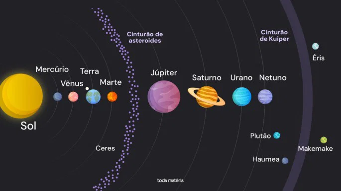

O Sistema Solar é constituído pelo Sol e por oito planetas

| Planeta | Posição em relação ao Sol | Característica |
| Mercúrio | 1.º | O planeta mais próximo do Sol |
| Terra | 3.º | Conhecido pela existência de vida |
| Júpiter | 5.º | O maior planeta |
| Neptuno | 8.º | O planeta mais distante do Sol |